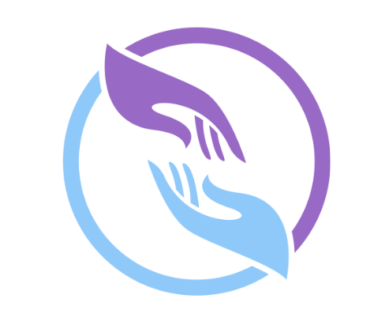

Programa de Entrenamiento Liderazgo Estratégico
Ver con Intención
Responde al terminar el episodio; no durante
Serie · Designated Survivor · Episodio 02 · El primer día · Semana 2
Antes de responder
Este formulario es tuyo. No hay respuestas correctas ni incorrectas.
Escribe lo que realmente pensaste; no lo que crees que debería decir un buen líder.
La honestidad es el insumo crítico de este proceso; sobre ella estructuraremos la sesión para garantizar el fortalecimiento de tus competencias y tu evolución profesional.
Escribe lo que realmente pensaste; no lo que crees que debería decir un buen líder.
La honestidad es el insumo crítico de este proceso; sobre ella estructuraremos la sesión para garantizar el fortalecimiento de tus competencias y tu evolución profesional.
Mi compromiso al abrir este formulario
Responderé únicamente desde mi realidad y conocimiento propio, sin apoyos externos. Este contenido es de mi autoría y constituye el insumo clave para potenciar mis habilidades y asegurar un progreso real en este proceso.
Test de valoración
¿Dónde estoy hoy?
1 = Nunca · 2 = Pocas veces · 3 = A veces · 4 = Con frecuencia · 5 = Siempre
Responde desde lo que realmente haces, no desde lo que quisieras hacer.
Autovalidación
Cuando tomo una decisión importante, puedo sostenerla sin buscar que alguien me la confirme antes de ejecutarla.
NuncaSiempre
Mapeo de poder
Antes de una reunión clave, identifico conscientemente quién tiene poder real, quién tiene agenda oculta y quién puede ser útil aunque no sea de mi confianza.
NuncaSiempre
Velocidad adaptativa
Ajusto la velocidad de mis decisiones según el tipo y el costo real de no decidir; no según mi nivel de comodidad con la información disponible.
NuncaSiempre
Escena ancla · Serie Designated Survivor · Episodio 02 · El primer día
Kirkman toma su primera decisión real; sin tiempo para análisis completo. Alguien con más experiencia la cuestiona públicamente. Kirkman no discute. No se justifica. Avanza.